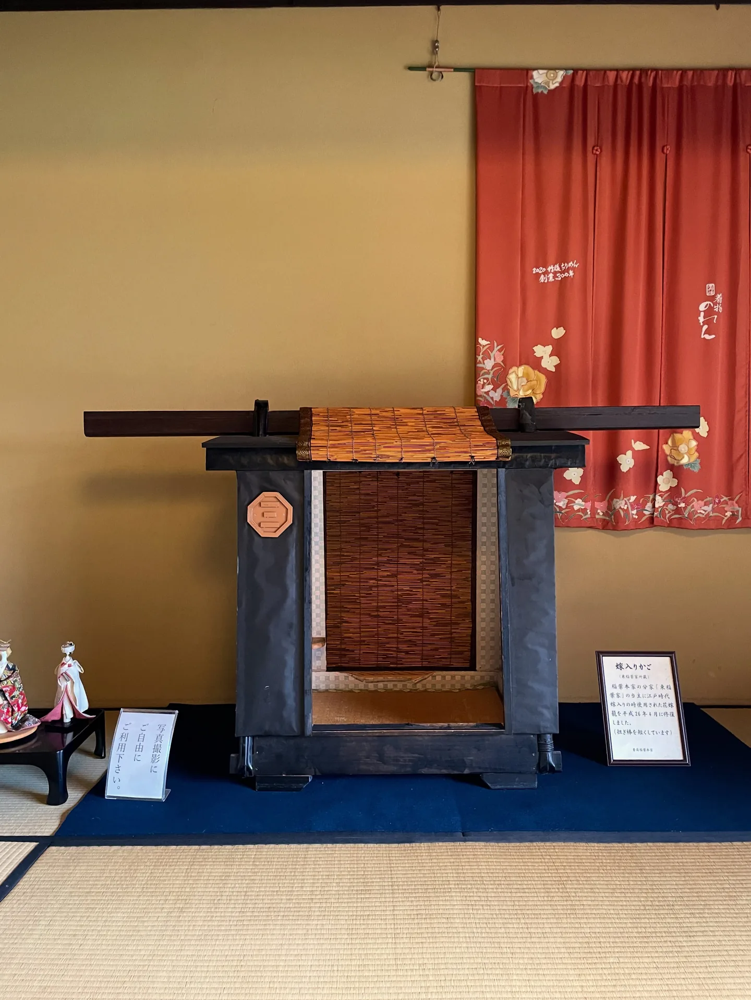
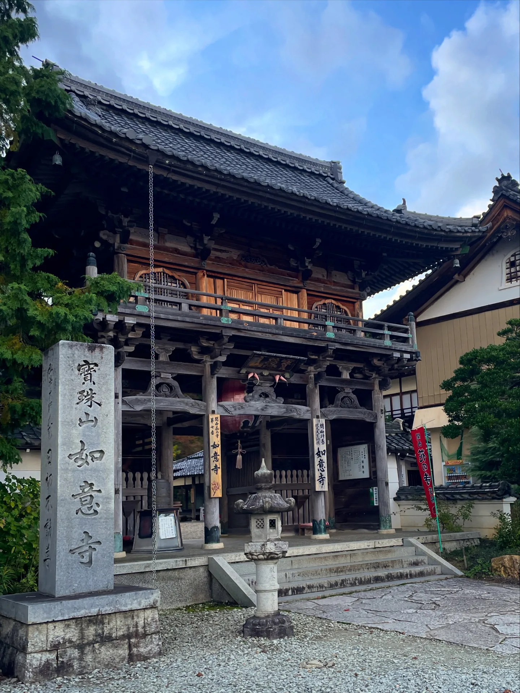
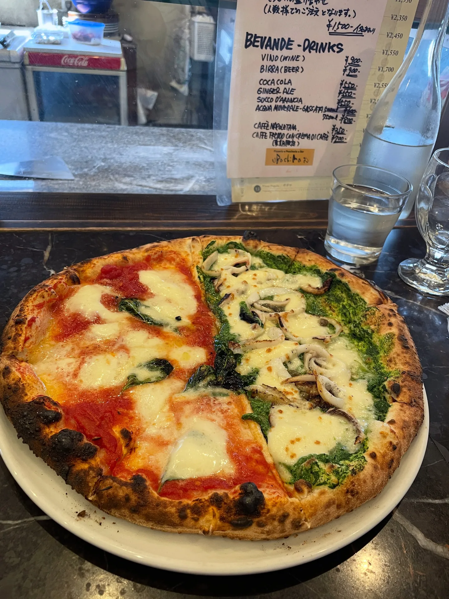
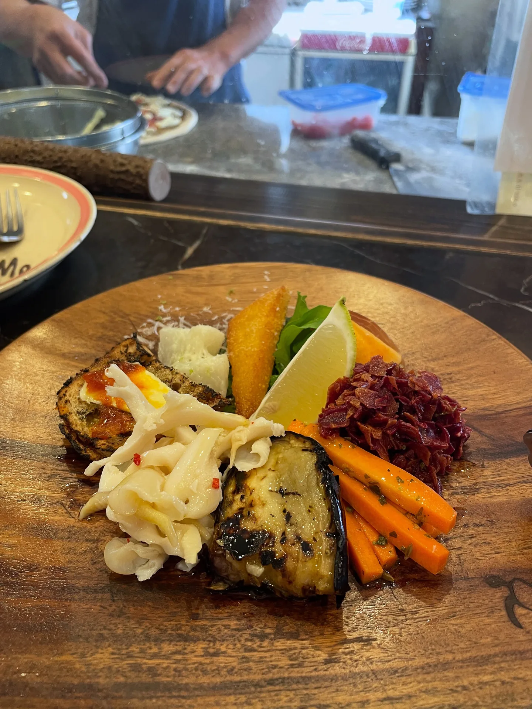

京丹後の日帰り旅：久美浜・網野・峰山
京丹後エリアの、1日または半日の旅の記録です。駅ごとに3つのエリアに分けました。
久美浜駅：豪商稲葉本家と如意寺
私は久美浜湾の細い砂州に住んでいて、いちばん近いスーパーは、ちょうど南の対岸の駅周辺にありました。
1つ目のスポットは「豪商稲葉本家」。お金持ちの家、というだけの場所で、すごく特別ではないけれど、退屈でもありません。印象に残ったのは2つの展示です。1つはお嫁入りのときのカゴ（嫁入り籠）で、座ってみることもできます。ものすごく小さくて狭くて、ひざを抱えるか正座するしかありません。昔の日本の女性の身長が140〜145センチだったとしても、やっぱりこう座るしかない！ もう1つは、自由に弾ける日本の琴で、こういうのを見るのは初めてでした！！



2つ目のスポットは如意寺。草花や木がきれいに手入れされていて、心が静まります。帰りは門の前がちょうど久美浜湾に向いていて、最後の最後まで美しかったです。

網野駅
午前中に出かけて、電車で網野駅まで行き、40〜50分歩いて、お昼ごはんに藤原鮮魚店 uRashiMa でピザを食べて、そのあと1時間歩いて琴引浜に向かいました。
藤原鮮魚店 uRashiMa
一人で、網野のピザ屋さん「藤原鮮魚店 uRashiMa」に行きました。店主は2012年に「ナポリピッツァ世界選手権（Pizza Olympic）」の Fantasia（創作）部門で銀メダルを取った人です。
お店は小さくて、席は5〜6席くらい。その日は予約のお客さんもいましたが、運がよく、ひとつだけ残っていた席に座れました。ピザの種類はたくさんあって、定番の味のほかに、地元の食材や海の幸を使ったオリジナルのピザもあります。ハーフ＆ハーフで頼めるので、一人でも2種類の味を食べられて、最高です！

前菜の盛り合わせは豪華で、運ばれる前に最後にオリーブオイルのようなものをかけていたと思います（忘れました）。それぞれ味はちがうのに、いくつも同じ油っぽい食感に当たって、ちょっと……邪魔かな？ と思いました。とくに印象に残った前菜の1つは、砂糖でコーティングした揚げサツマイモのかけらで、台湾のスーパーで買える「勇伯地瓜酥」にそっくりでした。（あとでわざわざ地瓜酥を持ってきて日本の人に食べてもらったら、この食感のサツマイモのお菓子は初めてだったようです。）

全体としては、ものすごく感動するほどではありませんでしたが、間違いなくおいしいです。しかも、あまり伝統的で定番的なものではなく、どれも変奏された感じがあって、けっこうおすすめです！
一人で食べて5,000円くらいかかりました（ピザ＋前菜の盛り合わせ＋ソフトドリンク）。ちょっと痛い……笑
メモ
- 藤原鮮魚店 uRashiMa：11:30〜19:00、木曜定休（そのほかの休みはIGで確認）。ピザは2,500円前後。
- 網野駅から歩いて40分、またはバス4分＋徒歩20分……
琴引浜
琴引浜は、鳴き砂の浜として知られる、国の天然記念物であり名勝です。いちご農園のオーナーの奥さんが、私が次に京丹後に行くと聞いたときに話してくれました。けっこう有名なはず、ですよね？ なのに、観光客はどうして2、3人しかいないんだろう……？
uRashiMa から海までは、歩いて1時間（おすすめしません、すごく疲れます XD）。途中で、牧場が経営しているアイスクリーム屋さんで休みました（アイスは普通……。京丹後エリアでいちばんのおすすめは、同じく牧場から始まったいちばん有名な「Sora」です）。
海辺は風がものすごく強くて、砂が風に舞っていて、人もほとんどいなくて、ちょっとこわいくらいでした。立ち止まってよく聞いてみると、確かに砂がこすれあう「さらさら」という音がはっきり聞こえます。砂の75%が石英だから、こすれると音が出るそうです。そして、砂が体やカメラのレンズに当たるのも、すごく実感できました。
調べていて気づいたのですが、同じ場所のすぐ近くに「太鼓浜」というエリアもあって、力強く足を踏みしめると、岩盤と共鳴して太鼓を打つような「ドンドン」という音が響くそうです。（そのときは知らなくて行かなかったので、「そうです」としか言えません〜）
Google マップで、足湯（Open-Air-Bath）のランドマークを見つけました。キャンプ場の下あたり、木の階段のそばです。コンクリートで作った人工の池で、広さは1坪くらい。ごく質素で特別なところはなさそうですが、海を見ながら足をつけられることこそ、いちばんの特別です！ 「海を見ながらお湯につかる」という実績を解除できます。かっこよすぎ〜
着いたとき、日本に住んでいる中年の外国人の方が3人、足をつけていて、この足湯は地元の人しか知らないと言っていました。帰りにバス停へ歩く途中、道ばたの柿をもいで、15分ほどバスに乗って網野駅に戻りました。速い、笑！
メモ
- 網野駅からバスで約15分、そのあと徒歩10分で着きます。
- 冬は営業していません。7〜8月は水着で入浴でき、そのほかの春と秋は足湯だけです。
峰山駅：コミュニティカフェ、金刀比羅神社、狛猫
峰山は、京丹後市でいちばん生活に必要なものが集まっているところです。午後に行って、まず「まちまち案内所」に行きました。コミュニティカフェのようで、みんなが交流する場所です。空間が広くて、昔は材木屋さんだったそうです。私は主に、市民発の「みんなの図書館」というしくみに興味がありました。お店ごとに企画も運営もかなりちがうので、時間があれば、いろんな事例を見に行っています。
ひととおり見たあと、もともとは地方創生の拠点「Roots（京丹後市未来チャレンジ交流センター）」にも行きたかったのですが、この空間の大部分は高校生向けのサービスで、玄関の前を3回もうろうろして、結局入る勇気が出ませんでした……！（すごく後悔！ 半年後にまた来たのに、それでも行けませんでした QQ）
そのあと、金刀比羅神社に行って、近くでたこ焼きを食べて、日本で唯一の「狛猫」の石像を見に行きました。最後に、まちまち案内所に戻って早めの夕食を食べてから帰ることにして、料理を出してくれたスタッフさんとおしゃべりを始めました。料理のことをたくさん話して、Roots に入れなかったことや、お店の「一箱本棚オーナー制度」の話などをしました。その制度を企画した人が、いつか来ると教えてもらいました。

数日後、2回目に行ったとき、思いがけないことが起きました。それは別の記事に書いています：〈ワークエクスチェンジの寄り道：日本人といっしょに料理して、日本人に食べてもらう〉。
続きを読む：〈日本でワーキングホリデーの1年：出発前の準備、お金のこと、あまり働かない暮らし方〉（2026-08-31）
キーワード京丹後久美浜網野峰山琴引浜豪商稲葉本家如意寺ピザ藤原鮮魚店uRashiMa金刀比羅神社狛猫足湯まちまち案内所